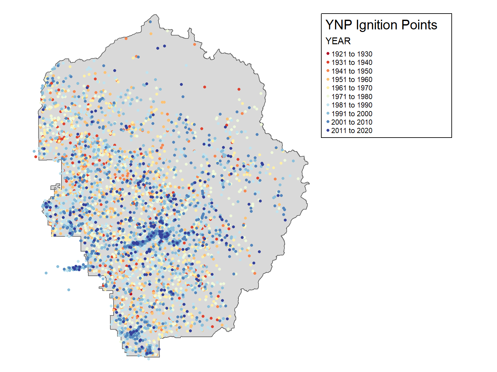
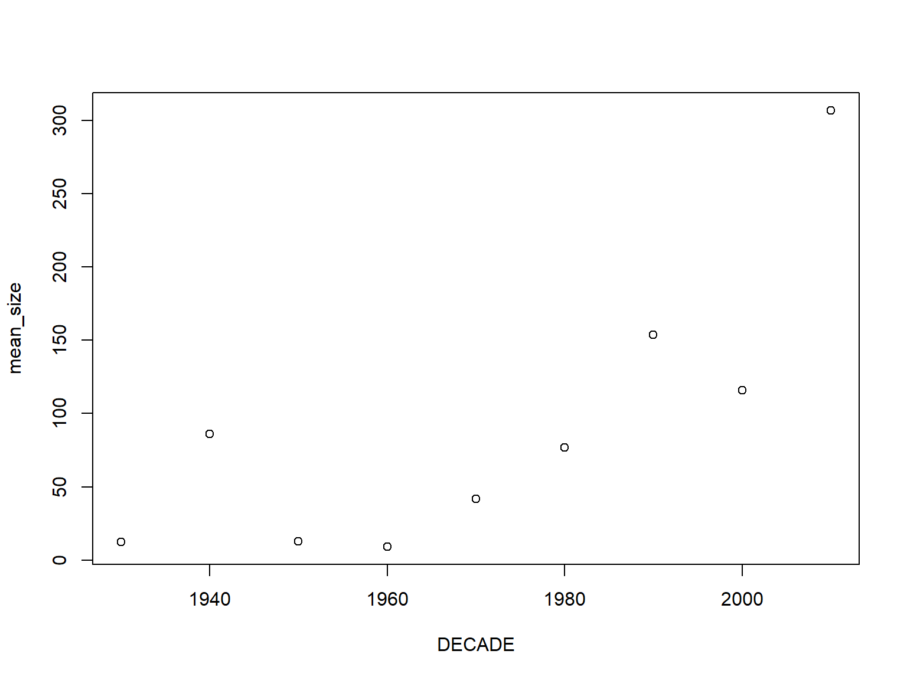
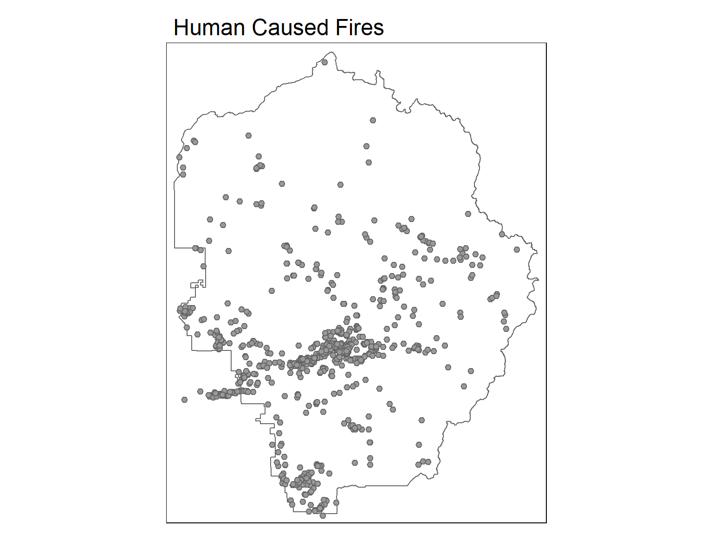
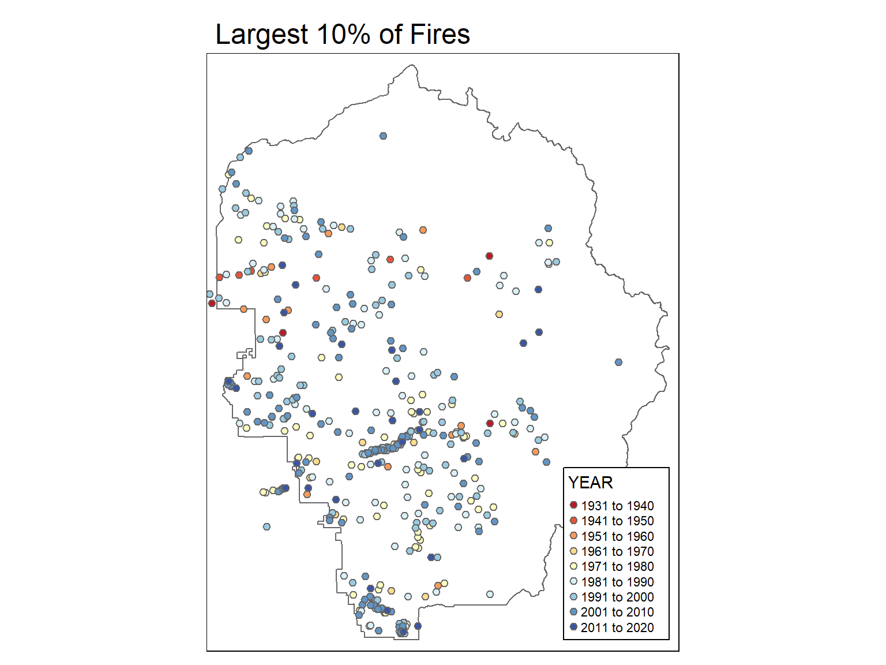
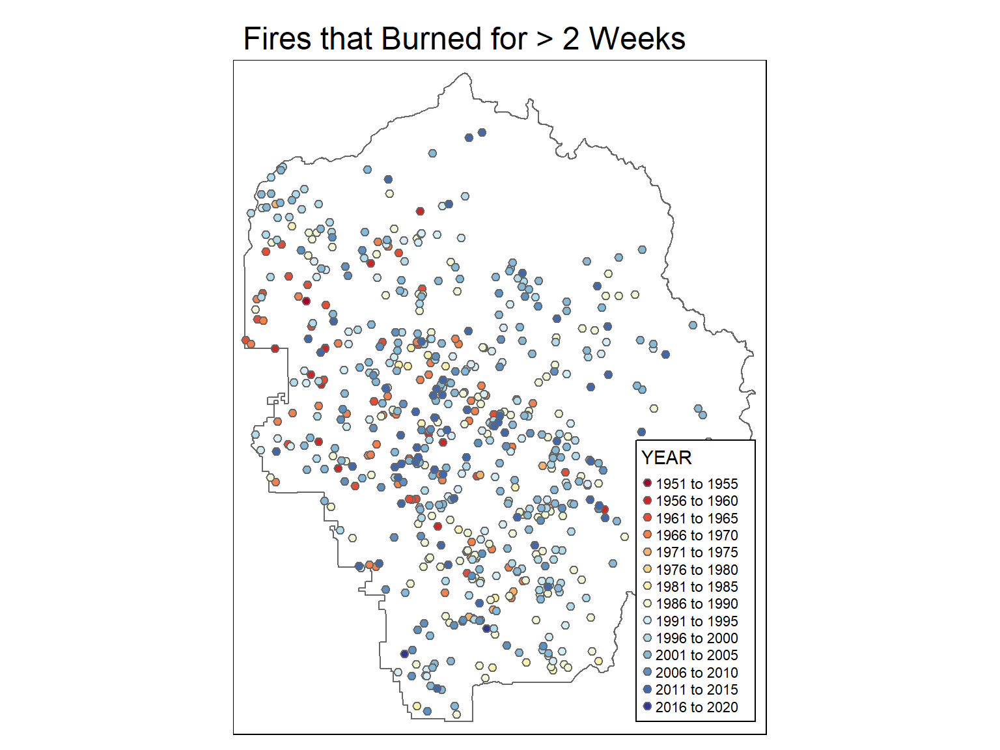
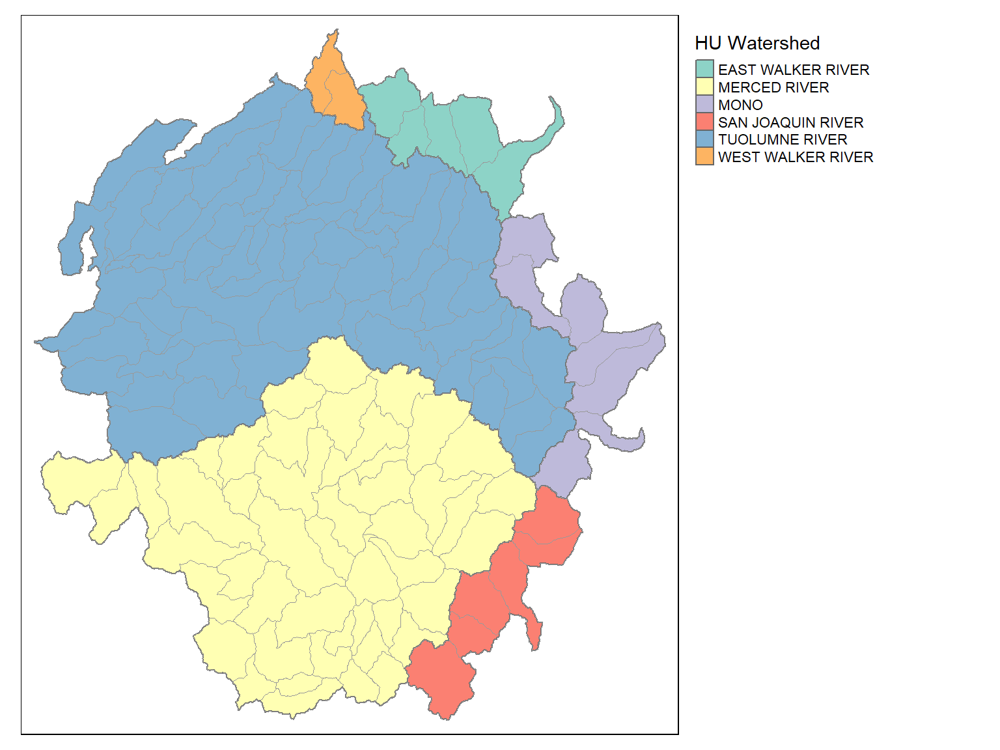

Working with Attribute Tables

The attribute table is commonly used for querying, symbology, and analysis.
Before you start working with the attribute table, it helps to understand the data.
First place to check - metadata files that come with the data.
Useful R functions to explore any data frame:
View()
names()
summary()
class()
unique()
table()
hist()
Most dplyr functions work fine on sf objects, and will return another sf object.
When needed, you can ‘drop’ the geometry column of a sf object with st_drop_geometry() (returns a data frame)
To get the values for a single column, you can use the $ operator or dplyr::pull().
The Yosemite Fire History geodatabase contains a point layer of fire ignition points, and a polygon layer of fire burned areas in YNP, 1930-2016.
## Reading layer `yose_poi' from data source `D:\Workshops\R-Spatial\rspatial_mod\outputs\rspatial_bgs23\notebooks\data' using driver `ESRI Shapefile'
## Simple feature collection with 2720 features and 30 fields
## Geometry type: POINT
## Dimension: XY
## Bounding box: xmin: 246416.2 ymin: 4153717 xmax: 301510.7 ymax: 4208419
## Projected CRS: NAD83 / UTM zone 11N## [1] TRUE## Reading layer `Yosemite_Roads' from data source
## `D:\Workshops\R-Spatial\rspatial_mod\outputs\rspatial_bgs23\notebooks\data\yose_roads.gdb' using driver `OpenFileGDB'
## Simple feature collection with 823 features and 40 fields
## Geometry type: MULTILINESTRING
## Dimension: XY
## Bounding box: xmin: 234658.1 ymin: 4139484 xmax: 324852.6 ymax: 4250252
## Projected CRS: NAD83 / UTM zone 11N
Import the fire ignition points layer:
## Import fire ignition points
## Define the location of the geodatabase
gdb_fires_fn <- "./data/yose_firehistory.gdb"
file.exists(gdb_fires_fn)
## View the layers in this source
st_layers(gdb_fires_fn)
## Import the historic fires ignition points
yose_fires_pt <- st_read(gdb_fires_fn, layer="YNP_FireHistoryPoints")
yose_fires_pt## [1] TRUE## Driver: OpenFileGDB
## Available layers:
## layer_name geometry_type features fields crs_name
## 1 YNP_FireHistoryPoints Point 4432 21 NAD83 / UTM zone 11N
## 2 YNP_FireHistoryPolys Multi Polygon 4422 21 NAD83 / UTM zone 11N## Reading layer `YNP_FireHistoryPoints' from data source
## `D:\Workshops\R-Spatial\rspatial_mod\outputs\rspatial_bgs23\notebooks\data\yose_firehistory.gdb' using driver `OpenFileGDB'
## Simple feature collection with 4432 features and 21 fields
## Geometry type: POINT
## Dimension: XY
## Bounding box: xmin: 243771.7 ymin: 4152632 xmax: 304217.2 ymax: 4227949
## Projected CRS: NAD83 / UTM zone 11N## Simple feature collection with 4432 features and 21 fields
## Geometry type: POINT
## Dimension: XY
## Bounding box: xmin: 243771.7 ymin: 4152632 xmax: 304217.2 ymax: 4227949
## Projected CRS: NAD83 / UTM zone 11N
## First 10 features:
## OBJECTID FIRE_ID LINK_ID SACS_ID FILE_ID NAME ACRES YEAR TYPE CAUSE HECTARES AREA PERIMETER
## 1 1 YNP-2 1930YNP-2 YNP-002 0.004 1930 WF LTG 0.001780549 17.805 14.97941
## 2 2 YNP-3 1930YNP-3 YNP-003 0.007 1930 WF LTG 0.002750173 27.502 18.61561
## 3 3 YNP-7 1930YNP-7 YNP-007 0.870 1930 WF LTG 0.352157100 3521.572 210.64806
## 4 8 YNP-10 1931YNP-10 YNP-010 Dog Lake\n 0.099 1931 WF LTG 0.040217169 402.172 71.18618
## 5 7 YNP-11 1931YNP-11 YNP-011 Rafferty Creek\n 0.050 1931 WF LTG 0.020073619 200.736 50.29261
## 6 10 YNP-15 1931YNP-15 YNP-015 Cottonwood Cree 1.989 1931 WF LTG 0.804988998 8049.891 318.48152
## 7 5 YNP-19 1931YNP-19 YNP-019 Merced Lake\n 0.011 1931 WF LTG 0.004530046 45.301 23.89166
## 8 9 YNP-20 1931YNP-20 YNP-020 Onoin Creek\n 1.492 1931 WF LTG 0.603740051 6037.401 275.81270
## 9 6 YNP-3 1931YNP-3 YNP-003 Coyote Creek\n 0.994 1931 WF LTG 0.402460960 4024.610 225.19107
## 10 4 YNP-5 1931YNP-5 YNP-005 Badger Pass\n 0.079 1931 WF LTG 0.032129019 321.289 63.62673
## SEQ_NO DECADE STARTDATE OUTDATE X_COORD Y_COORD ET_ID ORIG_FID Shape
## 1 157 1930 1899-12-30 1899-12-30 262412.7 4163816 0 1 POINT (262412.7 4163816)
## 2 156 1930 1899-12-30 1899-12-30 267727.9 4166016 0 2 POINT (267727.9 4166016)
## 3 155 1930 1899-12-30 1899-12-30 266014.8 4167194 0 3 POINT (266014.8 4167194)
## 4 150 1930 1899-12-30 1899-12-30 287444.7 4197420 0 8 POINT (287444.7 4197420)
## 5 151 1930 1899-12-30 1899-12-30 295170.0 4192392 0 7 POINT (295170 4192392)
## 6 148 1930 1899-12-30 1899-12-30 256659.1 4198577 0 10 POINT (256659.1 4198577)
## 7 153 1930 1899-12-30 1899-12-30 285626.0 4178935 0 5 POINT (285626 4178935)
## 8 149 1930 1899-12-30 1899-12-30 256657.1 4197587 0 9 POINT (256657.1 4197587)
## 9 152 1930 1899-12-30 1899-12-30 261539.1 4181555 0 6 POINT (261539.1 4181555)
## 10 154 1930 1899-12-30 1899-12-30 264529.5 4171437 0 4 POINT (264529.5 4171437)Explore the ignition points attribute table using the following functions.
library(tidyverse)
## View the column types and first few values
glimpse(yose_fires_pt)
## If you want to see all the data, open up the attribute table in a separate tab
# View(yose_fires_pt)
## View a summary of the ACRES column
summary(yose_fires_pt$ACRES)
## View the unique values of the 'CAUSE' column
yose_fires_pt %>% sf::st_drop_geometry() %>% dplyr::distinct(CAUSE)
## This would also work:
## unique(yose_fires_pt$CAUSE)
## Create a frequency table of the DECADE column
yose_fires_pt %>% st_drop_geometry() %>% count(DECADE)
# Also works:
# table(yose_fires_pt$DECADE)## Rows: 4,432
## Columns: 22
## $ OBJECTID <int> 1, 2, 3, 8, 7, 10, 5, 9, 6, 4, 18, 12, 28, 31, 29, 30, 27, 26, 14, 17, 23, 21, 32, 33, 25, 24, 22, 20…
## $ FIRE_ID <chr> "YNP-2", "YNP-3", "YNP-7", "YNP-10", "YNP-11", "YNP-15", "YNP-19", "YNP-20", "YNP-3", "YNP-5", "YNP-1…
## $ LINK_ID <chr> "1930YNP-2", "1930YNP-3", "1930YNP-7", "1931YNP-10", "1931YNP-11", "1931YNP-15", "1931YNP-19", "1931Y…
## $ SACS_ID <chr> "YNP-002", "YNP-003", "YNP-007", "YNP-010", "YNP-011", "YNP-015", "YNP-019", "YNP-020", "YNP-003", "Y…
## $ FILE_ID <chr> " ", " ", " ", " ", " ", " ", " ", " ", " ", " ", " ", " ", " ", " ", " ", " ", " ", " ", " ", " ", "…
## $ NAME <chr> " ", " ", " ", "Dog Lake\n", "Rafferty Creek\n", "Cottonwood Cree", "Merced Lake\n", "Onoin Creek\n",…
## $ ACRES <dbl> 0.004, 0.007, 0.870, 0.099, 0.050, 1.989, 0.011, 1.492, 0.994, 0.079, 0.010, 0.010, 5.271, 0.005, 0.0…
## $ YEAR <int> 1930, 1930, 1930, 1931, 1931, 1931, 1931, 1931, 1931, 1931, 1932, 1932, 1932, 1932, 1932, 1932, 1932,…
## $ TYPE <chr> "WF", "WF", "WF", "WF", "WF", "WF", "WF", "WF", "WF", "WF", "WF", "WF", "WF", "WF", "WF", "WF", "WF",…
## $ CAUSE <chr> "LTG", "LTG", "LTG", "LTG", "LTG", "LTG", "LTG", "LTG", "LTG", "LTG", "LTG", "LTG", "LTG", "LTG", "LT…
## $ HECTARES <dbl> 0.001780549, 0.002750173, 0.352157100, 0.040217169, 0.020073619, 0.804988998, 0.004530046, 0.60374005…
## $ AREA <dbl> 17.805, 27.502, 3521.572, 402.172, 200.736, 8049.891, 45.301, 6037.401, 4024.610, 321.289, 39.661, 39…
## $ PERIMETER <dbl> 14.97941, 18.61561, 210.64806, 71.18618, 50.29261, 318.48152, 23.89166, 275.81270, 225.19107, 63.6267…
## $ SEQ_NO <dbl> 157, 156, 155, 150, 151, 148, 153, 149, 152, 154, 140, 146, 130, 127, 129, 128, 131, 132, 144, 141, 1…
## $ DECADE <int> 1930, 1930, 1930, 1930, 1930, 1930, 1930, 1930, 1930, 1930, 1930, 1930, 1930, 1930, 1930, 1930, 1930,…
## $ STARTDATE <dttm> 1899-12-30, 1899-12-30, 1899-12-30, 1899-12-30, 1899-12-30, 1899-12-30, 1899-12-30, 1899-12-30, 1899…
## $ OUTDATE <dttm> 1899-12-30, 1899-12-30, 1899-12-30, 1899-12-30, 1899-12-30, 1899-12-30, 1899-12-30, 1899-12-30, 1899…
## $ X_COORD <dbl> 262412.7, 267727.9, 266014.8, 287444.7, 295170.0, 256659.1, 285626.0, 256657.1, 261539.1, 264529.5, 2…
## $ Y_COORD <dbl> 4163816, 4166016, 4167194, 4197420, 4192392, 4198577, 4178935, 4197587, 4181555, 4171437, 4175627, 41…
## $ ET_ID <int> 0, 0, 0, 0, 0, 0, 0, 0, 0, 0, 0, 0, 0, 0, 0, 0, 0, 0, 0, 0, 0, 0, 0, 0, 0, 0, 0, 0, 0, 0, 0, 0, 0, 0,…
## $ ORIG_FID <int> 1, 2, 3, 8, 7, 10, 5, 9, 6, 4, 18, 12, 28, 31, 29, 30, 27, 26, 14, 17, 23, 21, 32, 33, 25, 24, 22, 20…
## $ Shape <POINT [m]> POINT (262412.7 4163816), POINT (267727.9 4166016), POINT (266014.8 4167194), POINT (287444.7 4…## If you want to see all the data, open up the attribute table in a separate tab
# View(yose_fires_pt)
## View a summary of the ACRES column
summary(yose_fires_pt$ACRES)## Min. 1st Qu. Median Mean 3rd Qu. Max.
## 0.00 0.10 0.10 92.21 0.99 78892.00## View the unique values of the 'CAUSE' column
yose_fires_pt %>% sf::st_drop_geometry() %>% dplyr::distinct(CAUSE)## CAUSE
## 1 LTG
## 2 HC
## 3 MI## This would also work:
## unique(yose_fires_pt$CAUSE)
## Create a frequency table of the DECADE column
yose_fires_pt %>% st_drop_geometry() %>% count(DECADE)## DECADE n
## 1 0 2
## 2 1930 157
## 3 1940 142
## 4 1950 393
## 5 1960 598
## 6 1970 607
## 7 1980 768
## 8 1990 859
## 9 2000 579
## 10 2010 327# Also works:
# yose_fires_pt %>%
# st_drop_geometry() %>%
# group_by(DECADE) %>%
# summarise(num_rows=n())
# table(yose_fires_pt$DECADE)What was the largest fire on record?
Hint: check the data transformation cheat sheet
[Answer]
## OBJECTID FIRE_ID LINK_ID SACS_ID FILE_ID NAME ACRES YEAR TYPE CAUSE HECTARES AREA PERIMETER SEQ_NO DECADE
## 1 NA CA-YNP-0126 <NA> <NA> <NA> Rim 78892 2013 WF HC NA NA NA NA 2010
## STARTDATE OUTDATE X_COORD Y_COORD ET_ID ORIG_FID
## 1 2013-08-22 2013-10-18 255255.8 4197057 NA NAThe 2013 Rim fire was the largest on record.
For each decade, compute the number of fires and mean size. Create a scatterplot of the values.
[Solution]
decade_size <- yose_fires_pt %>%
st_drop_geometry() %>%
group_by(DECADE) %>%
summarise(mean_size = mean(ACRES)) %>%
filter(DECADE != 0)
decade_size## # A tibble: 9 × 2
## DECADE mean_size
## <int> <dbl>
## 1 1930 12.2
## 2 1940 86.2
## 3 1950 12.8
## 4 1960 9.12
## 5 1970 41.7
## 6 1980 76.9
## 7 1990 154.
## 8 2000 116.
## 9 2010 307.
‘query’ = ‘select’ features
‘attribute query’ = ‘select features by their attribute values’
Because sf objects are based on data frames, the
dplyr functions work natively. Pass a sf
object and you get a sf object back!
## Attribute queries
## Fires from the 1930s
fires_80s <- yose_fires_pt %>% filter(DECADE==1980)
## Fires between 1996 and 2005
fires_9605 <- yose_fires_pt %>% filter(YEAR >= 1996 & YEAR <= 2005)
## Top 10 largest fires
fires_top10 <- yose_fires_pt %>% top_n(10, ACRES)1. Plot just the fires that were started by humans. (Hint: CAUSE=‘HC’)
[Solution]
## Human caused fires
fires_hc <- yose_fires_pt %>% filter(CAUSE == 'HC')
tm_shape(yose_bnd_ll) +
tm_borders() +
tm_shape(fires_hc) +
tm_symbols(size=0.2) +
tm_layout(main.title = "Human Caused Fires")
2. Plot the top 10% of fires in terms of size. (Hint: you can use quantile() to compute a specific quantile value.)
[Solution]
## Largest 10% fires
fire_90pct_size <- yose_fires_pt %>% pull(ACRES) %>% quantile(0.9)
fire_90pct_size## 90%
## 16.1287fires_top10pct <- yose_fires_pt %>% filter(ACRES >= fire_90pct_size)
tm_shape(yose_bnd_ll) +
tm_borders() +
tm_shape(fires_top10pct) +
tm_symbols(col="YEAR", size=0.2, n=10, palette = "RdYlBu") +
tm_layout(main.title = "Largest 10% of Fires",
legend.bg.color="white",
legend.frame = TRUE,
legend.format = list(format="s"))
1. Plot the fires that burned for two weeks or longer.
[Hint] [Solution]
Use mutate() to add a new column for the length of time the fire burned.
For help on working with dates, view the lubridate cheat sheet
## Load the lubridate package (functions for working with dates and times)
library(lubridate)
## Get the long fires lasting >= 2 weeks
fires_long <- yose_fires_pt %>%
filter(STARTDATE > ymd(19300101), ## Get rid of records with bad dates
OUTDATE > ymd(19300101),
STARTDATE < ymd(20200101),
OUTDATE < ymd(20200101)) %>%
mutate(FIRE_DAYS = difftime(OUTDATE, STARTDATE, units="days")) %>% # add column
filter(FIRE_DAYS >= 14) # keep only the long ones
# Plot
tm_shape(yose_bnd_ll) +
tm_borders() +
tm_shape(fires_long) +
tm_symbols(col = "YEAR", size = 0.2, n = 10, palette = "RdYlBu") +
tm_layout(main.title = "Fires that Burned for > 2 Weeks",
legend.bg.color = "white",
legend.frame = TRUE,
legend.format = list(format="s"))
2. Create a separate fire map for each decade.
[Hint] [Solution]
You don’t actually need an attribute query for this! Google ‘tm_facets’.
To join an attribute table to a data frame based on a common field, you can use left_join(), right_join(), or inner_join() from dplyr.
More soon.
Grouping rows based on a common value of an attribute, and then computing one or more summary statistics for each group of rows, is extremely common. We a regular data frame, we can use group_by() and summarise() from dplyr.
We illustrate this with the attribute table from watersheds layer. This table has a column “HU” and “HUNAME” which are the id number and name of larger watersheds.
yose_watersheds_sf <- sf::st_read("./data/yose_watersheds.gpkg", layer="calw221")
watersheds_df <- yose_watersheds_sf %>% st_drop_geometry()
hu_df <- watersheds_df %>%
group_by(HU) %>%
summarise(HUNAME = first(HUNAME),
NUM_WATERSHEDS = n(),
AVG_ACRES = mean(ACRES))
glimpse(hu_df)## Reading layer `calw221' from data source
## `D:\Workshops\R-Spatial\rspatial_mod\outputs\rspatial_bgs23\notebooks\data\yose_watersheds.gpkg' using driver `GPKG'
## Simple feature collection with 127 features and 12 fields
## Geometry type: POLYGON
## Dimension: XY
## Bounding box: xmin: 1383.82 ymin: -61442.93 xmax: 81596.71 ymax: 26405.66
## Projected CRS: NAD83 / California Albers
## Rows: 6
## Columns: 4
## $ HU <int> 1, 30, 31, 36, 37, 40
## $ HUNAME <chr> "MONO", "EAST WALKER RIVER", "WEST WALKER RIVER", "TUOLUMNE RIVER", "MERCED RIVER", "SAN JOAQUIN…
## $ NUM_WATERSHEDS <int> 7, 5, 2, 60, 47, 6
## $ AVG_ACRES <dbl> 9311.916, 9385.448, 6426.835, 8128.559, 8399.112, 8911.178The exact same dplyr functions can be used with sf dataframes. The result is another sf object where the groups of features have been unioned together.
hu_sf <- yose_watersheds_sf %>%
group_by(HU) %>%
summarise(HUNAME = first(HUNAME),
NUM_WATERSHEDS = n(),
AVG_ACRES = mean(ACRES))
hu_sf
## Plot
tm_shape(hu_sf) +
tm_polygons(col="HUNAME", title="HU Watershed") +
tm_shape(yose_watersheds_sf) +
tm_borders(col="gray60", lwd=0.8) +
tm_layout(legend.outside = T)## Simple feature collection with 6 features and 4 fields
## Geometry type: POLYGON
## Dimension: XY
## Bounding box: xmin: 1383.82 ymin: -61442.93 xmax: 81596.71 ymax: 26405.66
## Projected CRS: NAD83 / California Albers
## # A tibble: 6 × 5
## HU HUNAME NUM_WATERSHEDS AVG_ACRES geom
## <int> <chr> <int> <dbl> <POLYGON [m]>
## 1 1 MONO 7 9312. ((73660.22 -23032.77, 73681.14 -23144.08, 73731.29 -23256.44, 73785.7…
## 2 30 EAST WALKER RIVER 5 9385. ((66826.29 17825.42, 66842.88 17853.58, 66861.79 17868.39, 66915.55 1…
## 3 31 WEST WALKER RIVER 2 6427. ((41216.82 21006.26, 41275.41 20974.09, 41329.18 20937.78, 41342.79 2…
## 4 36 TUOLUMNE RIVER 60 8129. ((23207.16 -25556.28, 23146.17 -25588.36, 23112.63 -25612.56, 23054.7…
## 5 37 MERCED RIVER 47 8399. ((40429.21 -57294.51, 40357.98 -57362.66, 40260.8 -57430.64, 40091.27…
## 6 40 SAN JOAQUIN RIVER 6 8911. ((55704.49 -53548.52, 55754.08 -53648.64, 55792.94 -53706.26, 55849 -…
Today we saw how to: